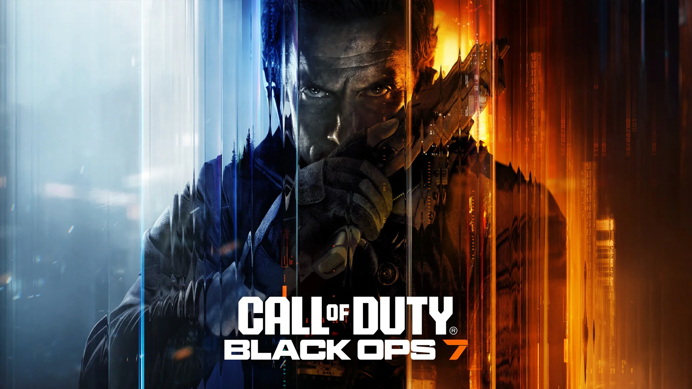

What is Battlefield 6?
October 5, 2025 by Zaden
Battlefield 6 is a first-person shooter game developed by DICE and published by Electronic Arts. It features large-scale multiplayer battles, destructible environments, and modern warfare settings.

Players can engage in intense combat across various maps, utilize a wide range of vehicles and weapons, and experience dynamic gameplay with squad-based tactics.
What is EOMM and how does it affect Call of Duty
October 5, 2025 by Zaden

EOMM stands for Engagement Optimized Matchmaking. In Call of Duty and other online games, EOMM is a matchmaking system designed to maximize player engagement rather than just balance skill levels.
Instead of only matching players by skill (like traditional SBMM—Skill-Based Matchmaking), EOMM uses data and algorithms to predict which matchups will keep players playing longer. This can mean mixing skill levels, creating varied win/loss streaks, or adjusting match difficulty to maintain player interest.